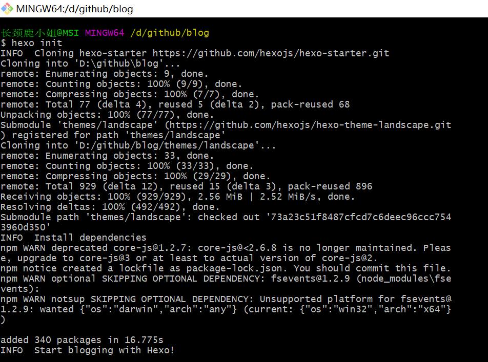
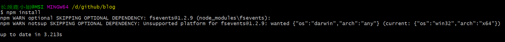
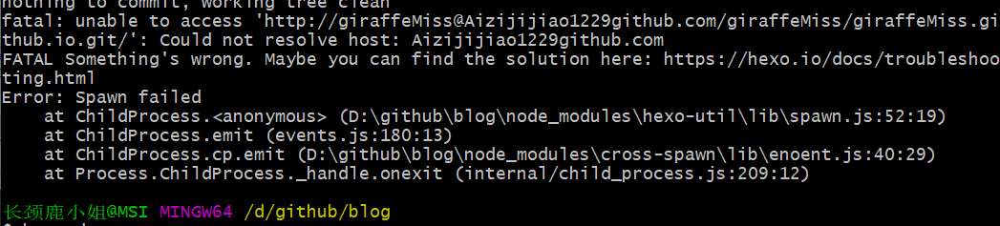

啰嗦几句
最近一直想建个博客写产品测评，前后大概花了一周多的时间才算彻底搭建好，踩了很多坑，主要原因也是Git用的不够熟练，虽然此篇教程适合小白在GitHub搭建一个属于自己的博客，但还是建议大家自行了解GitHub工作原理，有问题多谷歌~
这个博客使用Hexo框架，基于Node.js，首先需要你有一台电脑和一个GitHub的帐号。
准备工具
创建GitHub仓库
注册成功GitHub账号之后，点击New Repository创建一个新的仓库，名字是你的用户名.github.io。以我的为例，我的用户名是missgiraffe1229，创建的仓库名为：missgiraffe1229.github.io，以后访问博客输入的域名也是这个。（图片是为了解释明了新建的GitHub）
安装Git
教程只针对Windows，从Git官网直接下载https://git-scm.com/downloads。然后默认选项安装，安装成功后，在命令行中输入git –version，这说明安装成功。
安装Node.js
依然是在官网直接下载https://nodejs.org/en/download/，根据自己系统下载相应版本，默认安装。安装成功后，在命令行中输入npm –version和node –version，说明安装成功。
安装Hexo
所有工具都安装成功后，使用npm来安装hexo。开始菜单->Git->Git Bash.
输入：npm install -g hexo-cli，hexo成功安装。
创建博客
本地创建文件夹
在合适的目录下创建文件夹，以后博客需要的所有文件与资源都在这个文件夹中，右键单击文件夹，选择Git Bash Here。
输入：hexo init

输入：npm install

此时会发现在刚创建的文件夹下出现很多文件。
安装主题
此时本地博客使用的是hexo的默认主题lanscape，存储在themes文件夹下。Hexo又很多主题可以选择https://hexo.io/themes/，这里以NexT主题为例。
输入：git clone http://github.com/iissnan/hexo-theme-next themes
这代表安装成功，接下来我们启用这个主题，在我们最开始创建的文件夹中有一个_config.yml文件（主配置文件），将theme改成next。（推荐用Notepad++打开）
现在理论上，我们本地文件夹所搭建的博客已经使用NexT主题了，下面我们来看看博客的样子。
输入：hexo clean
输入：hexo server
输出的意思是在浏览器输入：http://localhost:4000 就可以看到刚刚做好的博客了。
这样，我们本地下的博客就已经确定搭建好啦~如果你想更改一些细节的样式，可以参考NexT的使用手册，也许下一篇也会写我现在博客样式的细节。
部署到GitHub
我们现在看到的博客还是本地使用的，我们需要将它部署到GitHub上。
首先我们先尝试开始写一篇博客。
输入：hexo new "Hello Giraffe"
可以看到在上述路径中新建了名为Hello Giraffe的md文件，用Typora打开就可以编辑文章了。
文章写完保存后，要在hexo进行操作。
输入：hexo generate
接下来将文件部署到GitHub，首先先安装工具。
输入：npm install hexo-deployer-git --save
安装成功以后在主配置文件_config.yml中搜索deploy，最后一行中更改：
特别要注意的是，冒号后面需要有英文空格，这个地方一定不要出错。这一步可以在以后更新博客时自动上传到GitHub中。
最后输入：hexo d
此时遇见了一点问题，不能找到我之前写的repo地址，这是因为第一次向这个新的GitHub上传东西，需要用户名和密码。

将主配置文件中的repo地址改成：
http://giraffeMiss:密码@github.com/giraffeMiss/giraffeMiss.github.io.git
这样就成功部署在GitHub上了，以后所有人都可以通过http://giraffeMiss.github.io 来访问博客了。
每一次更新博客时需要执行：
hexo clean
hexo generate
hexo d